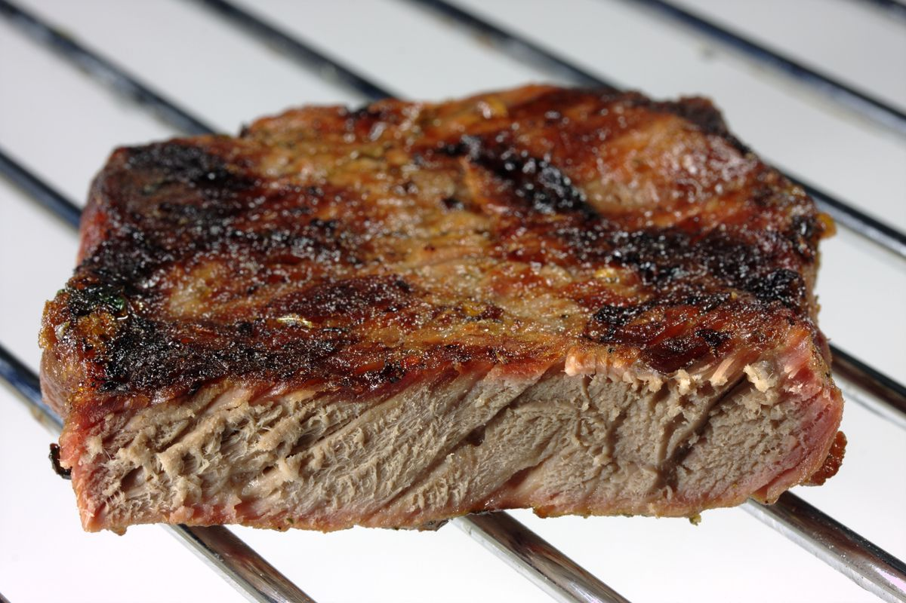

Well-Done Steak

Description
A well-done steak is a steak that has been thoroughly
cooked, with little-to-no pink or red in the middle.
Ingredients
- Steak
- Salt and/or pepper
- Butter or oil
- Garlic, thyme or rosemary (optional)
Steps
- Season
- Heat
- Sear
- Check for doneness
- Rest
- Serve